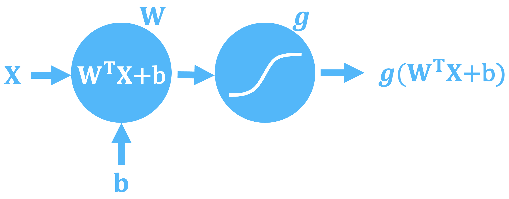

Page under construction
A neural network is a network of neurons which is designed to minimize some loss function. This function typically takes the form of some accuracy between some input feature(s) from a training dataset and some target label(s). But it could also be that the network (or agent) is trained to minimize some loss (or maximize some reward) function by performing tasks. However it happens, the network takes some input feature(s), maps them to some output(s) and then a loss is defined based on these outputs (more commonly called predictions in many contexts) and the desired outputs.
What is a neuron?
A neuron is a basic building block a neural network. A neural network, at a basic level, is a network of neurons which process some input feature(s), potentially with some other information, to produce a result. The result is numerical but this could be interpreted as the probability that the output belongs to a certain class, mapped back to a word embedding (more on that in the natural language processing section) or interpreted as an image. But what is a neuron?
A neuron, can be any basic building block that can be defined mathematically. Not everything that can be defined will be useful as a neuron in a neural network though and some standard useful forms of neurons have been discovered and used over the years since they were first described by McCulloch and Pitts in 1943 (link).
One of the most simple form of a neuron is one with a weight matrix, $in W$in, an additive bias, $in b$in, and an activation function, $in \textit{g}$in. The cross-product of any input feature vector with the weight matrix is formed, the additive bias added, and then this result is passed through the activation function (more on activation functions later as there are numerous commonly used functions with different uses).
Mathematically, a neuron is represented by:
$$\theta(X) = g\left(W^{T}X + b\right)$$
The weight matrix, $in W$in, has dimensionality equal to the number of input features by the number of expected output dimensions, which could be 1 or could be many. The bias term, $in b$in, is a single value that is added.
These neurons can be combined into layers, connected to one-another in linear or cyclical manners, and in some instance be much more complicated than is shown here. The entire collection of neurons is referred to as the network, whose job it is to map the input features to an expected value or class. Which neurons are used and how they are arranged and connected is referred to as the neural network architecture. These neural networks have to be trained to produce the mapping between input features and output labels.
How to train a neural network
Certain neural network architectures might have their own unique learning processes or workflows but a basic, generic workflow for training a neural network is the following:
Initialize the weights
while a stopping metric is not met:
Pass the input features through the network to form a prediction
Form the current loss between the predicted output and the true labels using the chosen loss function
Back propagate this loss through the network to update the weights and biases using the chosen optimizer
Note that iterative nature of the learning process, it typically takes many iterations to move from a network with an initial set weights and biases to one that can predict the value or class that you want. There are three key parts to this generic workflow beyond the iterative nature:
- Loss Function
- Optimizer
- Stopping metric
Loss Function
The loss function is what is used to determine how well the current network can map the input features to the target label(s) for the training data set. It is also typically the starting point for back-propagating any errors through the network to update the weights, biases, and any other network parameters so that the network can perform better at it's job.
There are a lot of different loss functions, each of which have their pros and cons and some are better suited for certain network architectures and end-goals, for instance are you trying train a classification model, a regression model, a reinforcement learning model etc.
Optimizer
Now that you know how well you're model is performing thanks to the loss function we can now use this information to update the network. But how exactly do we do this? This is the role of the optimizer. The optimizer is a certain algorithm that informs you of how to take you're loss function and propagate this back through the network to update it to perform better next time.
Stopping metrics in neural network training
We don't want to be training our neural network indefinitely, after a while the training won't yield any improvement in the model and could even eventually make the model worse. So, to optimize the training not only for accuracy but also time and compute resources (which equate to money inevitably) we need to know when to stop our training. This is the role of some rule or metric that we implement to determine when to stop our iterative learning. These can be as simple as setting the number of iterations or more complicated metrics based on statistics of the performance of the current network predictions on slices of the training or test data sets. Some common training stopping metrics are outlined below but this is not an exhaustive list by any means:
Number of Iterations
Most machine learning algorithms learn iteratively. They don't produce a result immediately in one calculation but gradually refine the weights, biases, and other parameters in their network in order to lower the loss function. The number of these iterations can be set and used a stopping criterion for the learning. This is typically done at the start of an experiment when we might be testing different architectures or feature engineering routines.
Loss function threshold
The loss function is what is used to determine how well the current network can map the input features to the target label(s) for the training data set. It is also typically the starting point for back-propagating any errors through the network to update the weights, biases, and any other network parameters so that the network can perform better at it's job. However, if there is no error, the loss function is zero, then there is nothing to back-propagate, no update to be made and continuing without making any other changes would be futile. Having a loss function value of zero is only really possible on toy datasets without any noise or errors, but a low loss function value could be met. When the loss is small, the update to the network is also necessarily small and this could mean a negligible increase in test set accuracy and further training of the network would not be cost effective. It makes sense then to impose a stopping criterion for a certain level of loss function, i.e. when the loss function is below a certain value then stop training. This level would represent an acceptable loss function value given the context of the problem.
Resource Constraint
This is more valid for cloud deployments of solutions but could also used for local deployments too. For cloud deployments we may want to limit the spend on training, either because we are in a test phase or because of time or monetary constraints. Like "number of iterations" this stopping criteria isn't a function of the network or it's performance but of the resources we have available to train the network. Two of the key limiting factors in training large neural networks is time and money. These networks require large amounts of compute power to train, which is costly, and take a long time to train, which is again costly. One can partially trade-off time for cost by using potentially slower compute resources but only if the model can still be trained on these cheaper resources, most large models require a large amount of RAM to train. Typically a time bound training regime is just a simple alternative to the number of iterations stopping criterion and budgetary constraints can be imposed in many cloud platforms.